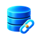

Add your database.
Sign in, select Add database, choose your engine, and enter your connection details or paste its connection URL.
Host & databaseRead-only credentialsConnection check

DATABASE CONNECTOR
By Nektron, Inc.
Ask ChatGPT about your data. It discovers your tables or collections, writes its own read-only queries, and follows the answers wherever your next question leads.
Five database engines · Public launch in preparation
Which products brought in the most revenue this month?
Here are the top products by revenue.
| Product | Orders | Revenue |
|---|---|---|
| Studio Desk | 128 | $38,400 |
| Arc Lamp | 204 | $24,480 |
| Oak Shelf | 96 | $17,280 |
Explore your own questions, then refine them with follow-ups.
Restricted access and query controls keep database queries read-only.
Enter them in secure setup, outside your ChatGPT conversation.
A SMALL SETUP. ROOM TO EXPLORE.
From an unfamiliar schema to a useful answer, without preparing a report for every question.
Sign in, select Add database, choose your engine, and enter your connection details or paste its connection URL.
Choose Database Connector in ChatGPT. Ask about a trend, find a record, or explore how your tables relate.
“What changed in our order volume this week?”
ChatGPT inspects authorized structure before writing SQL or a MongoDB pipeline.
Ask for a breakdown, compare another period, or follow a returned identifier into related records.
“Now break that down by region.”
Results include limits and source context so you can judge the answer.
USEFUL ACCESS. CLEAR BOUNDARIES.
Access follows the database account you authorize. You stay in control of what the connector can reach.
Restricted database credentials and engine-specific query controls work together. Relational queries are limited to permitted reads; MongoDB pipelines cannot write documents. The connector does not update your records.
Connection credentials are stored encrypted and are not returned to ChatGPT. Authorized query results are shared with ChatGPT to answer your questions.
Time, concurrency, row, and response limits keep requests controlled. Truncated results and unknown coverage are identified.
Verified TLS is required. The connector does not open database firewalls; private networks may need administrator setup.
Supported profiles: MySQL 8.4.5, PostgreSQL 17, SQL Server 2022, Oracle 19 and Oracle Free 26ai (server major 23), and MongoDB 8. Use restricted read-only credentials and verified TLS. Private networks may require administrator setup.
Discuss your databaseYOUR DATABASE ACCESS
Your Nektron account determines which saved database connections are available in ChatGPT.
Free accounts include one saved database connection.
Sign in to use the database allowance already included in your account.
Public enrollment is not open yet. Approved accounts can sign in and manage their connections. Query limits apply.
YOUR NEKTRON ACCOUNT
Use your Nektron account to manage saved databases and explore the access already available to you.
Database credentials belong in secure setup, never in a chat message.
Your databases and account access
Already connected? Open your workspace to add or remove databases within your current allowance.
Account help: info@nektron.ai
Choose your engine and provide the host, approved port, database name, username, and password—or a connection URL without extra options. Oracle uses a service name and table owner; PostgreSQL and SQL Server can specify a schema. Use a dedicated read-only account with permitted table or collection access and verified TLS. Network access must already be available or arranged by your administrator.
Relational tools execute policy-validated read-only SQL. MongoDB uses bounded aggregation pipelines without JavaScript, cross-collection lookup, output, or merge stages. Database writes are rejected. The service does maintain connection settings, operational audit metadata, and temporary concurrency records outside your database.
Yes. Sign in with your Nektron account to use its existing database allowance. This page provides setup and account information; it does not initiate subscriptions or upgrades.
Your first saved database remains available under Free. Additional saved configurations may be unavailable when they exceed your current entitlement. Customer database records are not deleted.
Supported database profiles are MySQL 8.4.5, PostgreSQL 17, SQL Server 2022, Oracle 19 and Oracle Free 26ai (server major 23), and MongoDB 8. SQL and document queries have engine-specific limits. Public directory availability is still in preparation; iPhone availability is not yet verified.
Check the returned records, result limits, and source context. Separate queries are separate snapshots, and AI interpretations can be wrong. Verify important conclusions against your source data.
LESS DISTANCE BETWEEN YOU AND YOUR DATA.